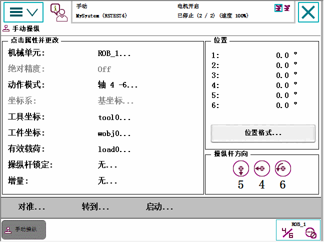

微动控制功能可从 微动控制窗口。最常用的功能还可在"快速设置"菜单中调用。
下图展示在了 Jogging（微动控制）菜单下，可提供的功能：

属性/按钮
功能
Mechanical unit（机械装置）
选择微动控制的机械单元，详情请参阅选择机械单元进行微动控制一节。
Absolute accuracy（绝对精度）
Absolute accuracy: Off（绝对精度：关闭）：关闭为默认值。如果机器人配备了 Absolute Accuracy 选件，则会显示 。
Motion mode（动作模式）
选择动作模式，详情请参阅 选择动作模式 一节。
Coordinate system（坐标系）
选择坐标系，详情请参阅选择坐标系一节。
Tool（工具）
选择工具，详情请参阅 选择工具、工件和有效载荷 一节。
Work object（工件坐标）
选择工件，详情请参阅 选择工具、工件和有效载荷 一节。
Payload（有效载荷）
选择有效载荷，详情请参阅 选择工具、工件和有效载荷 一节。
Joystick lock（控制杆锁定）
选择控制杆方向锁定，详情请参阅 在特定方向锁定控制杆 一节。
Increment（增量）
选择运动增量，详情请参阅 增量移动，精确定位 一节。
Position（位置）
参照选定的坐标系显示每个轴位置，如读取精确位置一节中所述。
如果以红色显示位置值，必须更新转数计数器。 请参阅更新转数计数器 一节。
Position format（位置格式）
选择位置格式，详情请参阅 读取精确位置 一节。
Joystick directions（控制杆方向）
显示当前控制杆方向，取决于动作模式的设置。请参阅 选择动作模式 一节。
Align（对准）
将当前工具对准坐标系。请参阅 对准工具 一节。
Go To（转到）
将机器人移至选定位置/目标。请参阅 将机器人移至编程位置 一节。
Activate（启动）
启动机械单元。请参阅